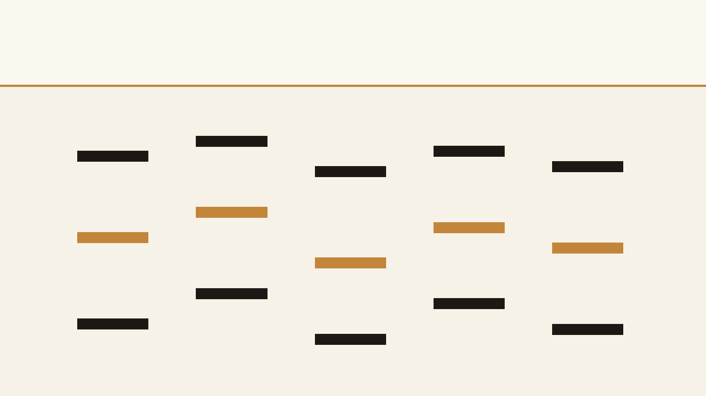

Eight studies · open spacing · room for a vocal
These eight progressions are studies. None of them is the definition of R&B.

keys upper voices, MIDI 72 and up vocal band, empty
Reading the MIDI.
Keys stay between MIDI 48 and 76, E5, at most four notes. That ceiling is the room for a vocal. Bass guides are monophonic, MIDI 28 to 52, and are not part of the core count.
Use either the combined arrangement or the separate parts. Do not stack the part files on top of the combined file.
Files
| Part | Role | Var | Count | BPM | Notes |
|---|---|---|---|---|---|
| s01.keys.a | keys-progression | a | core | 74 | 29 |
| s01.keys.b | keys-progression | b | core | 74 | 24 |
| s01.bass.a | bass-guide | a | bass guide | 74 | 8 |
| s01.bass.b | bass-guide | b | bass guide | 74 | 8 |
| s02.keys.a | keys-progression | a | core | 82 | 26 |
| s02.keys.b | keys-progression | b | core | 82 | 32 |
| s02.bass.a | bass-guide | a | bass guide | 82 | 8 |
| s02.bass.b | bass-guide | b | bass guide | 82 | 16 |
| s03.keys.a | keys-progression | a | core | 68 | 29 |
| s03.keys.b | keys-progression | b | core | 68 | 16 |
| s03.bass.a | bass-guide | a | bass guide | 68 | 8 |
| s03.bass.b | bass-guide | b | bass guide | 68 | 8 |
| s04.keys.a | keys-progression | a | core | 90 | 24 |
| s04.keys.b | keys-progression | b | core | 90 | 24 |
| s04.bass.a | bass-guide | a | bass guide | 90 | 16 |
| s04.bass.b | bass-guide | b | bass guide | 90 | 8 |
| s05.keys.a | keys-progression | a | core | 78 | 12 |
| s05.keys.b | keys-progression | b | core | 78 | 16 |
| s05.bass.a | bass-guide | a | bass guide | 78 | 4 |
| s05.bass.b | bass-guide | b | bass guide | 78 | 8 |
| s06.keys.a | keys-progression | a | core | 86 | 27 |
| s06.keys.b | keys-progression | b | core | 86 | 24 |
| s06.bass.a | bass-guide | a | bass guide | 86 | 8 |
| s06.bass.b | bass-guide | b | bass guide | 86 | 8 |
| s07.keys.a | keys-progression | a | core | 70 | 14 |
| s07.keys.b | keys-progression | b | core | 70 | 18 |
| s07.bass.a | bass-guide | a | bass guide | 70 | 4 |
| s07.bass.b | bass-guide | b | bass guide | 70 | 8 |
| s08.keys.a | keys-progression | a | core | 96 | 32 |
| s08.keys.b | keys-progression | b | core | 96 | 24 |
| s08.bass.a | bass-guide | a | bass guide | 96 | 16 |
| s08.bass.b | bass-guide | b | bass guide | 96 | 8 |
Recorded reading · study 01 variation A, all 8 bars
This MP3 is 25.95 seconds. preview, not a master. The film is 25.95 seconds and shows preview, not master.
No program changes are encoded. A conventional GM player will normally use its default piano program for pitched channels unless configured otherwise; compatible GM channel 10 percussion is treated separately. Player behavior may vary.
No human listening audition was performed for this build.
The GitHub repository is https://github.com/mizcausevic-dev/rnb-midi-chords and it is public. The catalog page is https://mizcausevic-dev.github.io/rnb-midi-chords/ .